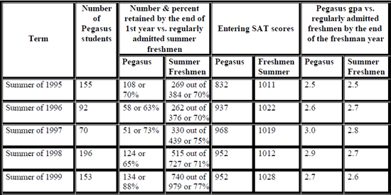
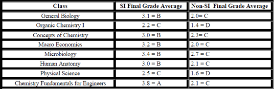

Term Number of Pegasus students Number & percent retained by the end of 1st year vs. regularly admitted summer freshmen Entering SAT scores Pegasus gpa vs. regularly admitted freshmen by the end of the freshman year
Too many students enter college with high SAT scores and high school GPA’s but still lack the thinking and study skills to accurately portray their intelligence. UCF is fortunate to have SI which is one of 2 retention programs certified by the U. S. Department of Education as an Exemplary Educational Program. This means that SI was proven to actually increase grades and retention.
UCF has had an SI program since 1996 when there were 2 classes with SI support. This past fall semester 2000, 24 sections of classes in biology, chemistry, economics, microbiology, math, and physics had SI support.
The SI program model is based on the learning theories of Piaget, Dewey, and Bruner. As a result, students who participate in the SI program enjoy the benefits of collaboration, peer cooperation and support, study skills in notetaking, textbook reading, concentration, memory, test preparation, testtaking, time management, etc. In this manner, students acquire and refine the skills for learning and move toward the SI goal of creating independent learners.
SI focuses on historically difficult or high-risk courses and not on high-risk students. A student is hired who has had this course before and has earned an “A” in it. After extensive training, this student, called an SI leader, attends class, takes notes, reads all assignments, and does the homework. The SI leader holds 3-4 SI sessions per week where they focus on communicating the latest in effective study skills for learning the material in the high-risk class. Students cooperate to build complete and accurate lecture notes, complete and accurate solutions to problems, formulate potential exams questions and answers, tackle sample tests, and exchange information on effective learning skills. At appropriate times, SI leaders distribute “how-to” handouts on college level learning skills that are effective for understanding and learning difficult material. Below are some examples of final grade:
Some of the research presented may be startling in terms of what is found to work to increase retention but one theme is ever-present: the fewer faculty and staff who participate in retention efforts, the worse is retention. That includes simple activities that range from simple greetings and friendliness toward students to the large programs proven to increase student success and persistence.
According to 23 years of research from the Noel-Levitz Retention Research Group (with over 600 on-campus consultations and 97 National Retention Excellence Award winning programs) retention is not a goal! NoelLevitz’s two most significant discoveries in the past 10 years of research appear to be contrary to many notions of what reduces attrition:
USA Group Noel-Levitz
It has been traditional to view attrition as the outcome of poor academic preparation skills. Discovery #1 suggests while academic preparedness is essential, it may also be productive to look at services and programs that address the role of motivation and attitudes in the educational experience. Discovery #2 emphasizes that it is to revise traditional views of academic preparedness and examine internal factors affecting retention beyond application.
The SARC is open 24-hours per day before mid-term and final exams. Contact the SARC for specific dates. During this time, SARC provides:
Dennis Congos, SI Coordinator